1편 링크 : https://www.dogdrip.net/dogdrip/734473387?_filter=search&search_target=title_content&search_keyword=Sbs&page=1
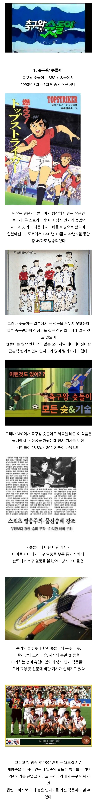
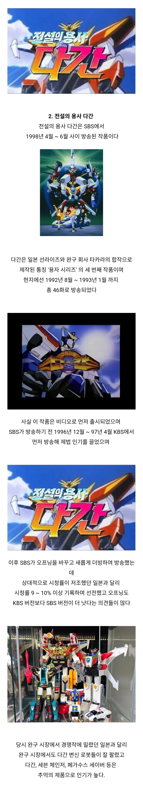
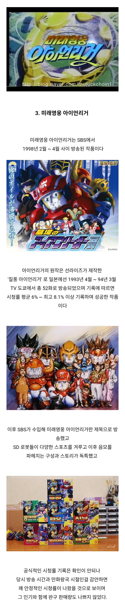
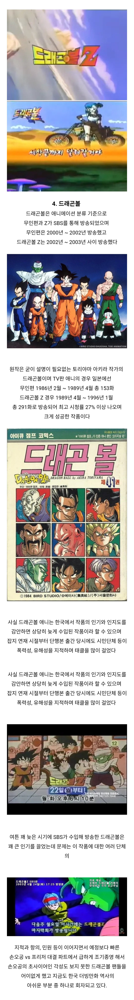
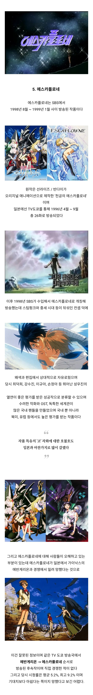
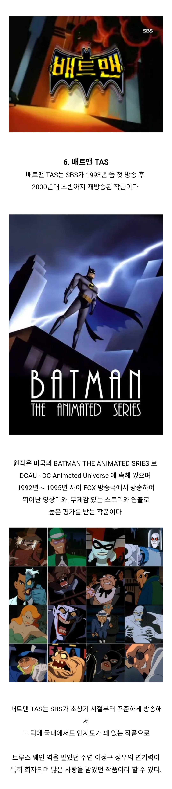
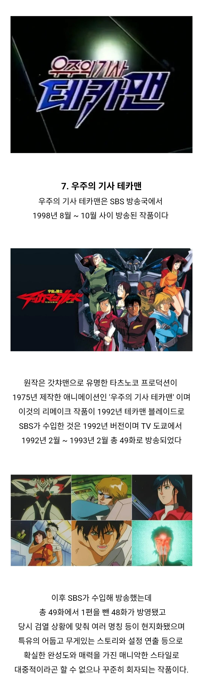
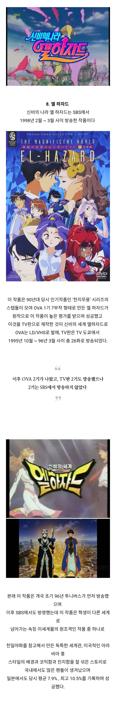
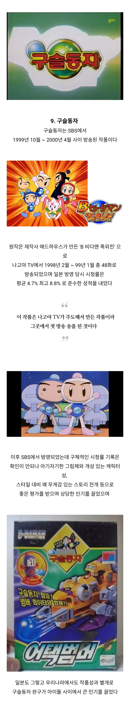
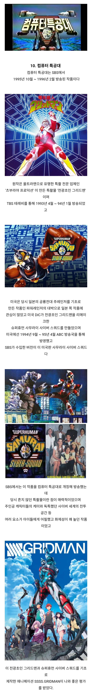
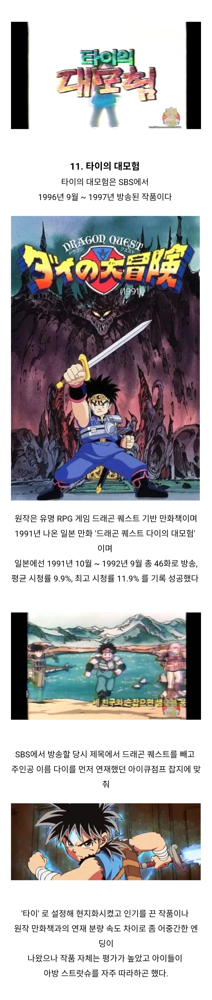
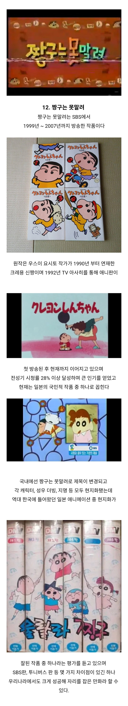
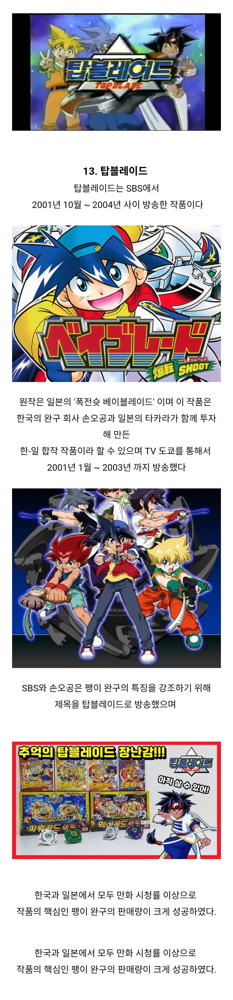
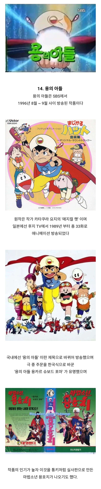
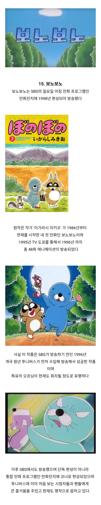
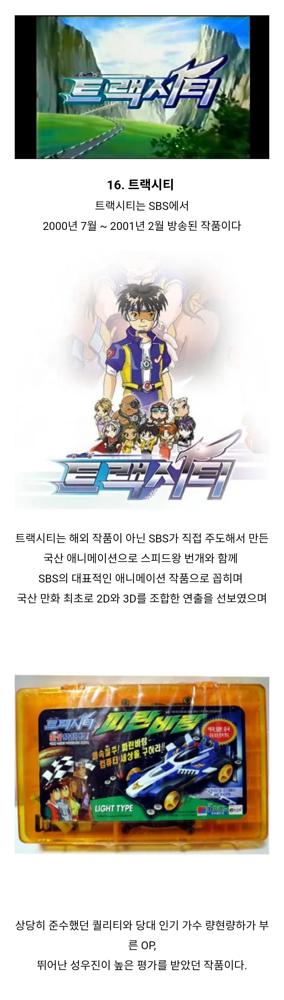
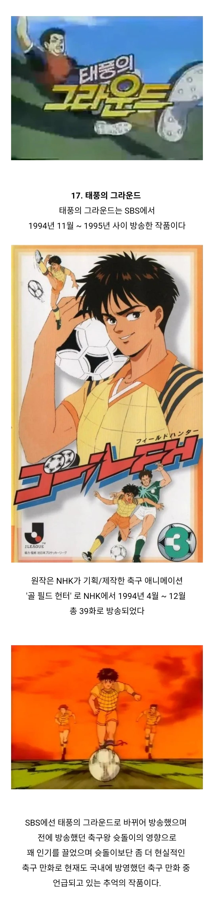
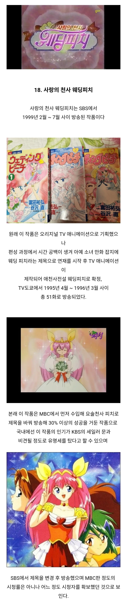
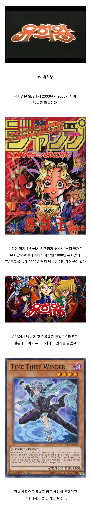
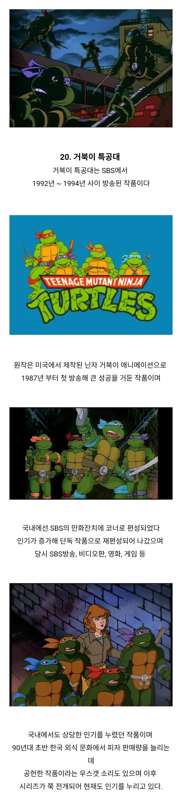
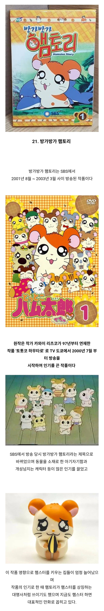
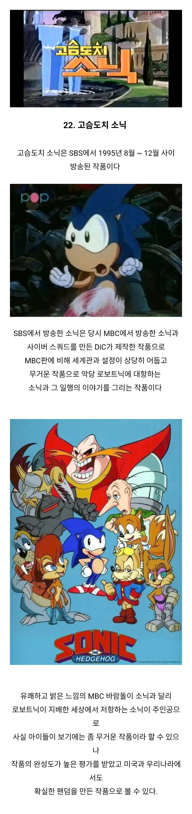
출처: https://m.fmkorea.com/index.php?mid=mystery&search_target=title_content&document_srl=10551780711&search_keyword=Sbs
나는 스폰지밥이랑 막이래쇼 봤다 이기야